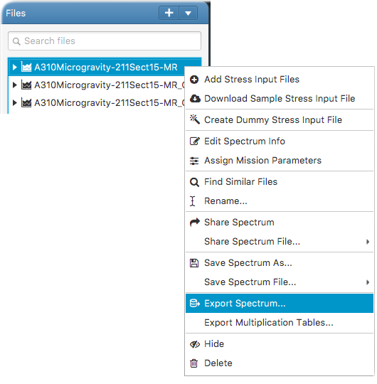

This opens the export spectrum panel. In the panel, basic spectrum attributes such as A/C program, A/C section, fatigue mission and etc. can be edited. This will export the spectrum with the information into a zip archive. The archive can then be sent to the database administrator for uploading into ESCSAS database.